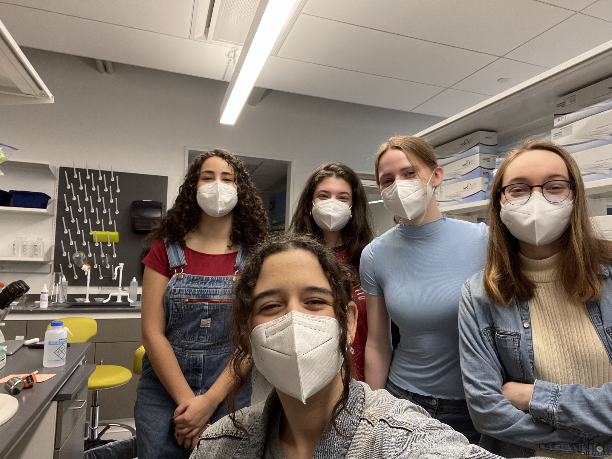
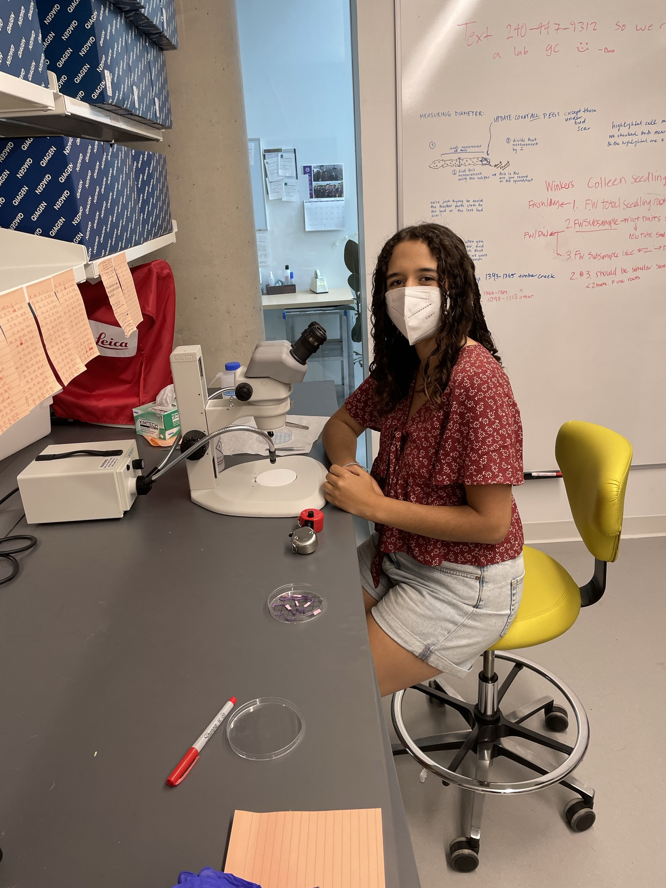

RESEARCH ASSISTANT / LABORATORY LEAD HEWITT LAB, AMHERST COLLEGE
 Working in the Hewitt Lab taught me valuable lessons about balancing multiple responsibilities. I quickly realized the importance of setting boundaries and asking for help—especially as I stepped into unfamiliar roles, such as organizing lab operations, training students, and maintaining inventory. I hadn’t previously managed these tasks, but the challenges pushed me to grow. Although I struggled at times, these experiences were crucial in shaping my approach to lab work and team leadership.
POSITION DETAILS
As a senior in Dr. Rebecca Hewitt’s lab, I managed younger undergraduate's independent projects, trained students in root sample preparation, safe handling for downstream DNA analysis, and mycorrhizal colonization, and assisted with various laboratory maintenance tasks. When Dr. Hewitt took maternity leave, I became the lab's point of contact, overseeing communication and procedures. Part of my role also involved working on individual projects in support of Dr. Hewitt's research. I was tasked with developing a database of literature investigating the effects of Arctic warming on rhizosphere processes, collaborating with international researchers and senior scientists. Finally, I served as Dr. Hewitt's climate science course laboratory TA for one semester. I was in charge of collecting and processing the data for the lab projects and experiments. I carried out stream health assessments, used pH meters to obtain the pH of both soil and water samples, carried out soil incubations to quantify soil carbon content, and instructed students on taxonomy and how to use dichotomous keys. I held weekly hour-liong office hours and instructed students on scierntific writing and basic statistical analysis techniques.